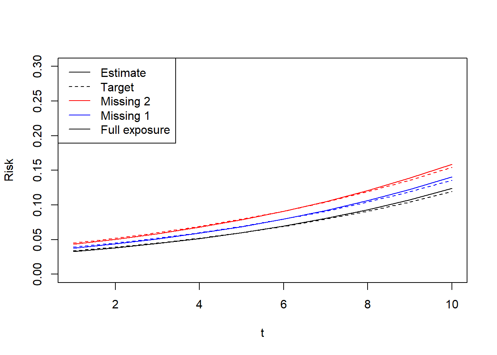

for (j in 1:n_pool) {
colnames(summary.measures[, , j]) <- c("time.on.treatment", "time")
}
colnames(summary.measures) <- c("time.on.treatment", "time")
{
start_time <- Sys.time()
ss <- mem_change(
test <- ltmleMSM(dt_use, Anodes = grep("^A1_", node_names),
Lnodes = paste0("L_", 1:11),
Ynodes = grep("^Y_", node_names),
Cnodes = grep("^C_", node_names),
survivalOutcome = T,
# SL.library = c("SL.glm"),
# SL.library = c("SL.glm", c("SL.glm","screen.corP")),
regimes = regimes[, , test.treated[, 1, 1]],
summary.measures = summary.measures,
working.msm = "Y~time.on.treatment + time",
# working.msm = "Y~1",
variance.method = "ic", # direct EIC plug in; might be underestimated with positivity and rare outcomes
# final.Ynodes = "Y_11",
final.Ynodes = paste0("Y_", seq(to = K+1, length.out = n_pool, by = 1)), # to pool across these nodes
msm.weights = "empirical", # h weights by obs data
# SL.cvControl = list(V = 8) # control CV fold numbers; might be used in paralleled version
deterministic.g.function = administrativeCensoring, # incorporate deterministic censoring based on index dates
# gbounds = c(0.05, 0.95),
estimate.time = F # do not run on a n=50 subsample for predicting computation time
)
)
end_time <- Sys.time()
}
ss # MEM change in MB
test # coef est
difftime(end_time, start_time, units = "mins") # time in minll <- 10
expit(test$beta[1] + test$beta[3] * (1:ll) + test$beta[2]*c((1:ll))) %>% plot(x = 1:ll, type = "l", ylim = c(0.00, 0.3), ylab = "Risk", xlab = "t")
expit(test$beta[1] + test$beta[3] * (1:ll) + test$beta[2]*c((1:ll) - 1)) %>% lines(x = 1:ll, col = "blue")
expit(test$beta[1] + test$beta[3] * (1:ll) + test$beta[2]*c((1:ll) - 2)) %>% lines(x = 1:ll, col = "red")
(1-expit(coef_intercept +coef_a*(1:ll) + coef_b*c((1:ll)))) %>% lines(x = 1:ll, col = "black", lty = 2)
(1-expit(coef_intercept +coef_a*(1:ll) + coef_b*c((1:ll)-1))) %>% lines(x = 1:ll, col = "blue", lty = 2)
(1-expit(coef_intercept +coef_a*(1:ll) + coef_b*c((1:ll)-2))) %>% lines(x = 1:ll, col = "red", lty = 2)
# (1-sapply(1:ll, function(u) np_truth(u, u) )) %>% lines(x = 1:ll, col = "black", lty = 2)
# (1-sapply(1:ll, function(u) np_truth(u, u-1) )) %>% lines(x = 1:ll, col = "blue", lty = 2)
# (1-sapply(1:ll, function(u) np_truth(u, u-2) )) %>% lines(x = 1:ll, col = "red", lty = 2)
legend(x = "topleft", # Position
legend = c("Estimate", "Target", "Missing 2", "Missing 1", "Full exposure"), # Legend texts
lty = c(1, 2, 1, 1, 1), # Line types
col = c("black", "black", "red", "blue", "black")
)